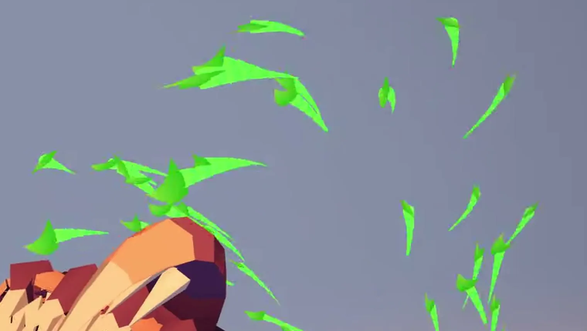
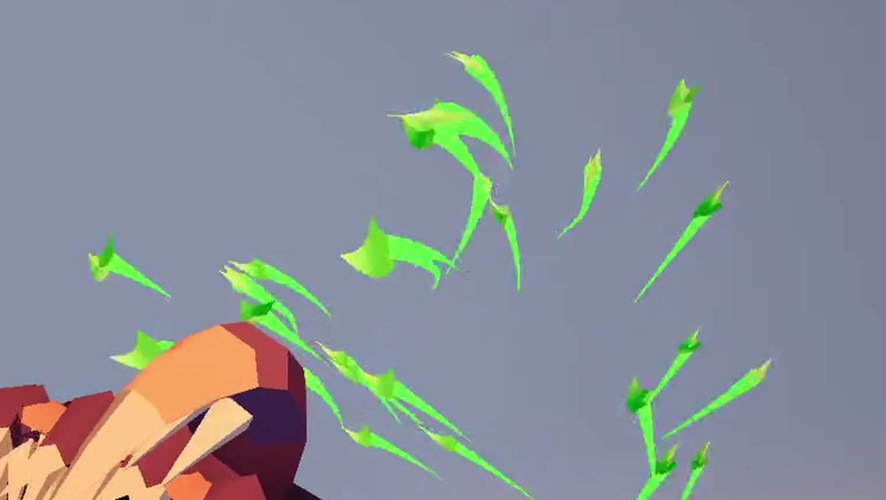
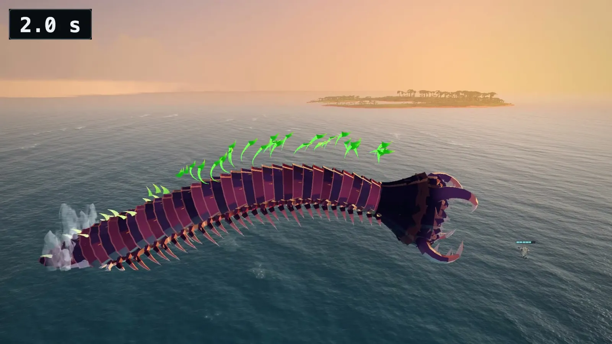
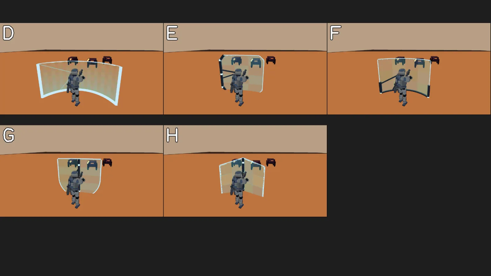
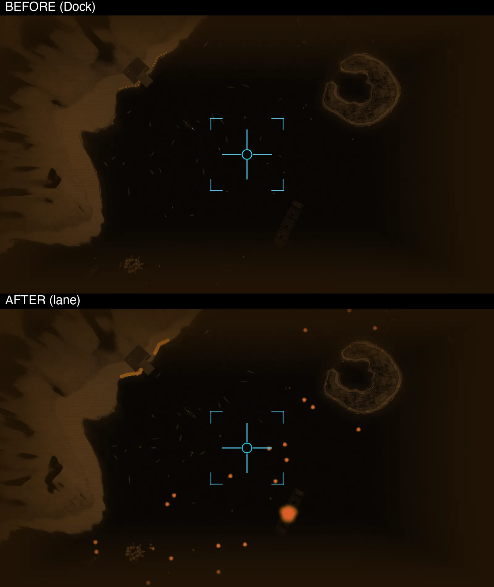
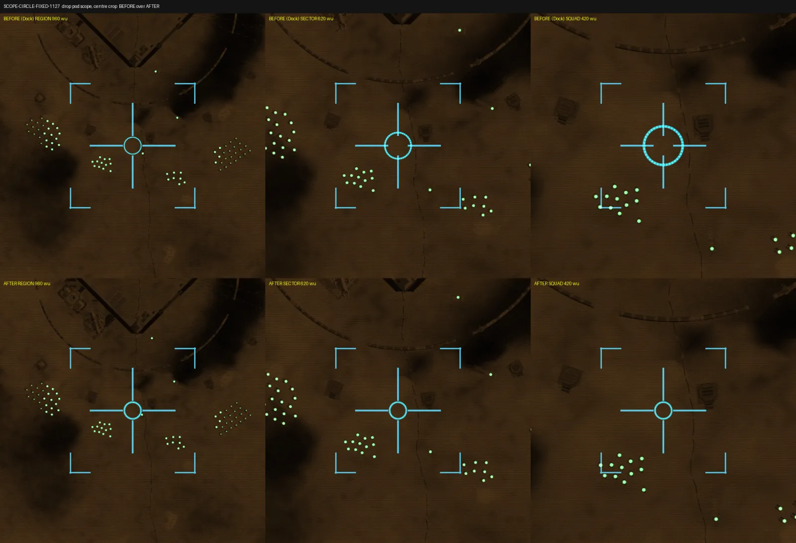
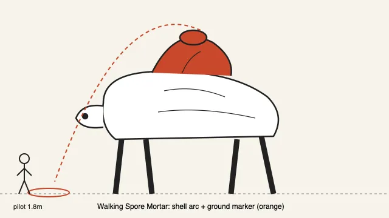
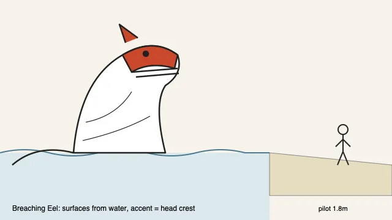
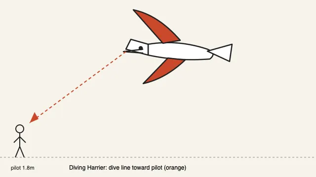

Steel Tide: to review
Version 284, 11-27 10:10 PM. Version refresh 11-27 night: the pilot shield needs your pick, the boss spike look is in review, two scope fixes are live. Live with no capture: gun back in the hands after a revive (M619), mech call fix (M620), Thornback health (M621), enemy speeds (M622), boss dives after its spike volley and fliers no longer stack (M623), Windows load time (M623), Thornback ice walk round 3 (M624), pilot guns hurt Thornbacks (M626). Newest first. Total 0.4 MB.
Boss flying spikes: new look, before and after in review
Updated 11-27 7:47 PM ET · captured from lane build 2d5377550c, not live
What changed: The spikes were flat green shapes that looked drawn by a marker; look 1 is the builder's pick, with more shaped, shaded spikes.
Where to look: First image is before, second is look 1 up close; third is look 1 at the game camera.
The long flat streaks in the third image are the spike trail, which has been reworked since; there is no capture of the new trail yet.



Pilot holo shield, round 2: four barrier-style shields (E to H) needs your decision
Updated 11-27 3:42 PM ET · captured from mockup render, not in the game
What changed: You said D was the closest but looked kind of bad and pointed at the Paladins and Overwatch barrier shields. E to H are barrier-class shields; D is shown for comparison.
Where to look: Top left is D, then E, F on the top row and G, H below. Pick one letter, or ask for another round.

Thermal scope shows enemy hulls and boats live M625
Updated 11-27 3:19 PM ET · captured from lane build before ship
What changed: The scope now shows enemy hulls and boats as orange heat marks; before it showed almost nothing there.
Where to look: Top is before, bottom is after: orange dots across the water and the big blob over the ship at lower right.

Drop-pod scope: the circle stays one size live M623
Updated 11-27 2:07 PM ET · captured from before = previous live build, after = the fix
What changed: The centre circle grew when you zoomed in; now it is the same small size at every zoom.
Where to look: Top row is before at region, sector and squad zoom (the circle swells to the right); bottom row is after, all the same.

Three new enemy sketches: spore mortar, breaching eel, diving harrier needs your decision: thumbs up or down (may already be decided)
Updated 11-25 2:27 PM ET · captured from sketches only, nothing built
What changed: First look at three new elites: one for land, one for the sea in place of enemy ships, one for the air.
Where to look: One sketch each with a pilot beside it for scale. Orange marks the attack: the mortar's shell arc and ground ring, the eel's head crest, the harrier's dive line.
The Thornback has since replaced the hulk ships, so the eel may be overtaken; kept because no ruling on these three was found.



NEEDS YOUR PICK: the drop cannon's size on the Cradle (three sizes), with its back hidden and navy colour needs your pick (may already be decided; the Cradle itself is live)
Updated 11-18 7:43 PM ET · captured from lane build 7bb227aa5d
What changed: The cannon is now the ship's navy instead of bright white, its back is hidden in a gun bay like on the old ship, and the old ship no longer flashes at the start. Same cannon, same sequence.
Where to look: The full sheet: old ship on the left, Cradle on the right, for arrival, push, unfold, scope and launch. The cannon size options were three extra previews, left off this refresh.
Your pick: 1.4 is what ships today and everything clears. At 2.5 and 3.5 the cannon looks right for a ship this size, but its unfold swing hits the hull, so choosing either means one more round to make room for the swing. Weak points: the cannon's cyan coils and pale bands still stand out against the navy, and it does not take the hull's shadow.